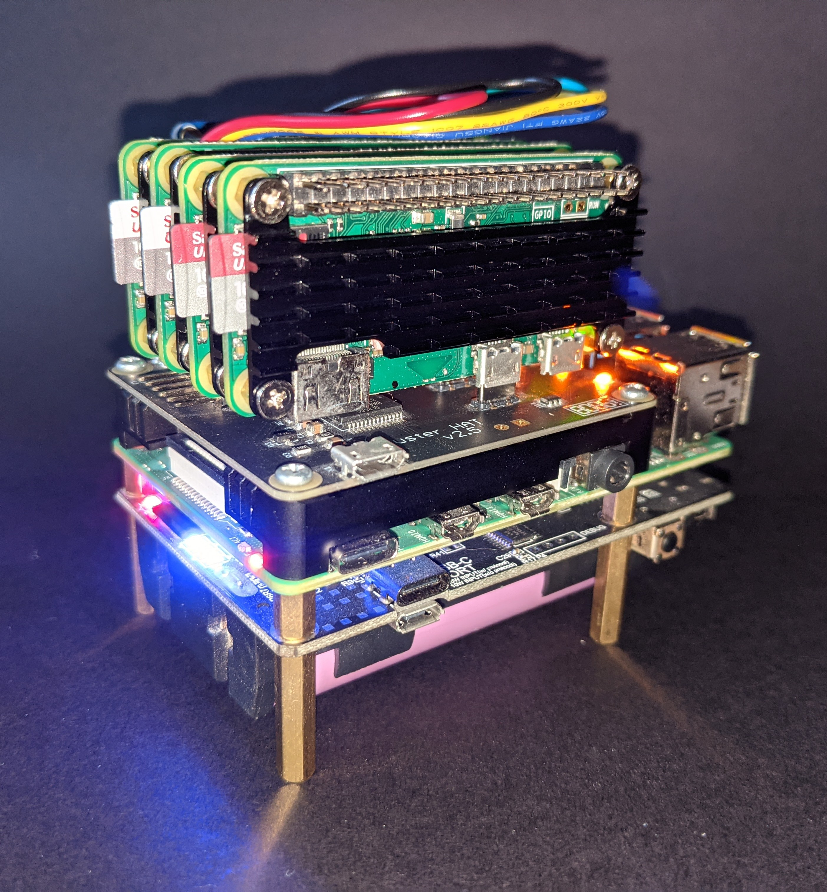

This project is my current project and most likely will be my ongoing project. The server
consists of a 8Gb RAM Raspberry Pi 4B, 4 Raspberry Pi Zeros, ClusterHAT, UPS, OLED and 4
Fans.
The reason for a server is it host my Discord Bot as well as a PiHole to block ads by
redirecting it. This could have been done by a single Raspberry Pi. However, I added
the additional Pi Zeros and UPS to allow myself to try out docker, kubernetes,
Portainer and future projects and Apps that require more processing power and RAM. For
example a Minecraft server.
Once I had everything built, I took measurements to allow me to create a case that fits all
the electronics as well as a transparent side screen it see the insides as well as have the
OLED screen shine through the side displaying information about each of the Raspberry Pis
as well as the UPS.

This project was to create a bot that can communicate with the public within
my discord server. I wanted to create a server where people with similar interests
could talk with one another. However, in order to make it more entertaining and
interractive, the server needs bots.
Seraphine:
Seraphine is a bot for allowing music to be played within the server using youtube-dl
which is an open source software for downloading video and audio from youtube and other
video hosting websites. I did have an issue when it came to testing Seraphine because
after downloading all dependecies correctly and running the python script without any
errors occuring. I tried making Seraphine play music but I could not hear anything being
played. After multiple attempts of looking up different methods of downloading dependencies,
the issue was my discord had glitched because when I asked a friend to join and listen,
they could hear and music being played so I tried connecting from my phone and I could hear
as well so I had to reinstall Discord.
Ahri:
Ahri is the second bot that is being made. Her main purpose is to help people who join
the server for the first time as well as making sure people follow the rules of the server.
In addition, she will be doing the level keeping as well and possibly more. So far she is
small fragments of codes.
Evelynn:
Evelynn will be the third bot however, she is still a thought and no actuall coding yet.
The main reason for Evelynn would be managing all games that are ran on the server.
All of these bots are and will be uploaded and ran on the Raspberr Pi Cluster Server
along with other applications
I recently had to upgrade my shelving. I wanted something that looked nice so I decided
to create a CAD model for it. I was going to make it out of MDF boards so I had to
design something that was asthetically pleasing yet did not produce a lot of scrap wood.
You can see in the image the fully assembled shelving unit which I cut and built 2 of
which can be seen with the link below to the github with the CAD files and images.